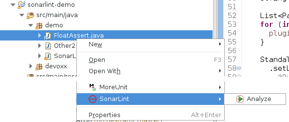

SonarLint offers a fully-integrated user experience in Eclipse-based IDEs. After installing the plugin issues will be reported as Eclipse markers.
SonarLint is free, open source, and available in the Eclipse Marketplace.

News
- March 2, 2016 - We released bugfix version 1.3.1 of SonarLint for Eclipse.
- February 17, 2016 - We released version 1.3 of SonarLint for Eclipse. The plugin is now fully standalone: there is no more dependency on http://update.sonarlint.org. We removed the quick fix // NOSONAR that was too controversial. Java analyzer is updated to its latest version (3.10). Some rules were added on pom.xml files.
- January 15, 2016 - We have updated Java and JavaScript analyzers to their latest version (Java 3.9 and JavaScript 2.10). Use Help -> Update SonarLint analyzers menu to get them.
- December 16, 2015 - We released version 1.2 of SonarLint for Eclipse. It is possible to see recently introduced issues by displaying the "Date" column in SonarLint issues view. Also there is a quick fix for SonarLint issues to mute them by adding a // NOSONAR comment.
- December 7, 2015 - We released version 1.1 of SonarLint for Eclipse. Updated versions of Java, JavaScript and PHP analyzers: some issues start to be more precisely located on code. Few more rules and many improvements to existing ones. Use Help -> Update SonarLint menu to get new analyzers.
- October 15, 2015 - Today we released version 1.0 of SonarLint for Eclipse. Java, JavaScript and PHP are supported.
FAQ
-
How to start SonarLint analysis? - SonarLint analysis is automatically triggered by a builder (in short: when a file is modified) and also when you open a file.
If you want to disable the builder got to project properties: Right click on the project -> SonarLint and uncheck "Run SonarLint automatically"
If builder is disabled you can manually run SonarLint analysis using context menu on file:  - How can I connect SonarLint to my SonarQube server? - At the moment, SonarLint works entirely offline (locally), embedding all analyzers and settings needed, and it's not possible to connect it to a SonarQube server. Soon it will be possible to link SonarLint to a SonarQube server instance to use its analyzers, configured rules, etc.
- How to configure rules? - You can't for now. We will make this feature available in upcoming versions, probably by requiring to "connect" SonarLint with an existing SonarQube server instance.
-
How to see rule description? - Full rule description is available in a dedicated view. You can open it using the context menu in the issues view:

- How to exclude files from the analysis? - By default we are excluding derived files. Appart from that all Java, JavaScript and PHP files are analyzed, and even some XML files.
- How to open SonarLint console? - SonarLint console allow to see logs of the analysis. This can be useful to understand some technical issues. You can open it from standard Eclipse Console views:
-
How to enable verbose logs? - By default SonarLint console will not display debug logs. You can enable debug logs from SonarLint console:

Contribute
SonarLint for Eclipse is open source under the LGPL v3 license. You can fork us on GitHub, and submit Pull Requests. Feel free to fix bugs or to implement new features.
Feedback
The preferred way to discuss about SonarLint is by posting on the SonarLint Google Group. We are also constantly monitoring questions posted to StackOverflow. For faster answers mark your StackOverflow questions with [SonarLint] and [Eclipse] tags.